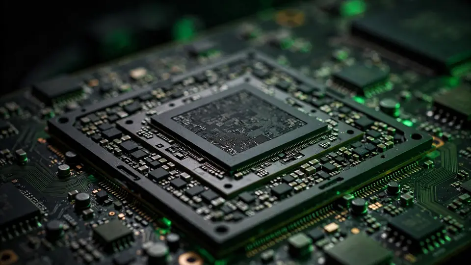

Nvidia in early talks to buy Reflection AI, the $25B open-weights lab it already backs — FT
Nvidia is in early talks to acquire or deepen its investment in Reflection AI, the open-weights lab it already backs, the Financial Times reported Saturday — with an “acqui-hire” structure on the table that could dodge a lengthy regulatory review.
Nvidia is in early talks to acquire Reflection AI or significantly deepen its investment in the open-weights startup, the Financial Times reported on Saturday. For the chipmaker that already poured $800 million into the lab, renting influence may no longer be enough — owning it outright might be.
The options on the table
The FT, citing people with direct knowledge of the matter, says the talks are at an early stage and a deal could take several forms: a so-called “acqui-hire,” in which Nvidia would hire Reflection’s staff and license its technology rather than pursue a full acquisition — potentially avoiding a lengthy regulatory review — a deal to supply the startup with more chips, or a larger Nvidia equity stake, according to AIStockWire. An agreement could be reached in the coming weeks, the report adds — though the discussions could just as easily fall apart.
The usual caveats apply. Reuters, which moved the FT’s story on Saturday, said it could not immediately verify the report, and neither Nvidia nor Reflection responded to requests for comment outside regular business hours. Early-stage deal talks leak precisely because someone wants them priced in — or killed.

Why Reflection is worth the fight
Reflection AI was founded in 2024 by Misha Laskin and Ioannis Antonoglou, both former Google DeepMind researchers, with an explicit pitch: frontier-grade open-weight models with the intellectual property onshore in the United States — America’s answer to Chinese open models like DeepSeek and Kimi. Chief executive Laskin told CNBC in April that the lab was raising fresh capital at a $25 billion pre-money valuation.
Five days ago the company released Beam, its first open-weight model: a 501-billion-parameter mixture-of-experts with 23 billion active parameters, trained on 23.8 trillion tokens, with a 1-million-token context window. Reflection says Beam matches Z.ai’s GLM-5.2 on reasoning benchmarks while using three to four times less inference compute — company claims that, as Startup Fortune notes, have not been independently verified yet. Full weights and a technical report are due under an Apache 2.0 license later this month. We covered the Beam launch on Monday.
Nvidia’s buying pattern
This would not be Nvidia’s first move to convert a chip-supply relationship into ownership. The company led Reflection’s $2 billion funding round in October 2025, writing an $800 million check at an $8 billion valuation — a stake worth roughly three times that in under a year. Since then, Nvidia has committed up to $10 billion to Anthropic and backed an OpenAI data center lease, and Reflection already runs on Nvidia hardware through compute deals with SpaceX and Nebius, per AIStockWire. The GPU maker is quietly assembling a frontier-model portfolio.
What to watch
Structure matters more than price here. A full acquisition of a $25 billion lab would invite antitrust scrutiny that an acqui-hire is designed to sidestep. Then there is the open-weights question: Reflection’s entire pitch is downloadable models, and Beam’s Apache 2.0 weight release is due later this month — watch whether it survives a deal with a company that has never shown much interest in open weights. And watch the clock: “in the coming weeks” is deal-speak for a story that will either confirm fast or die quietly.